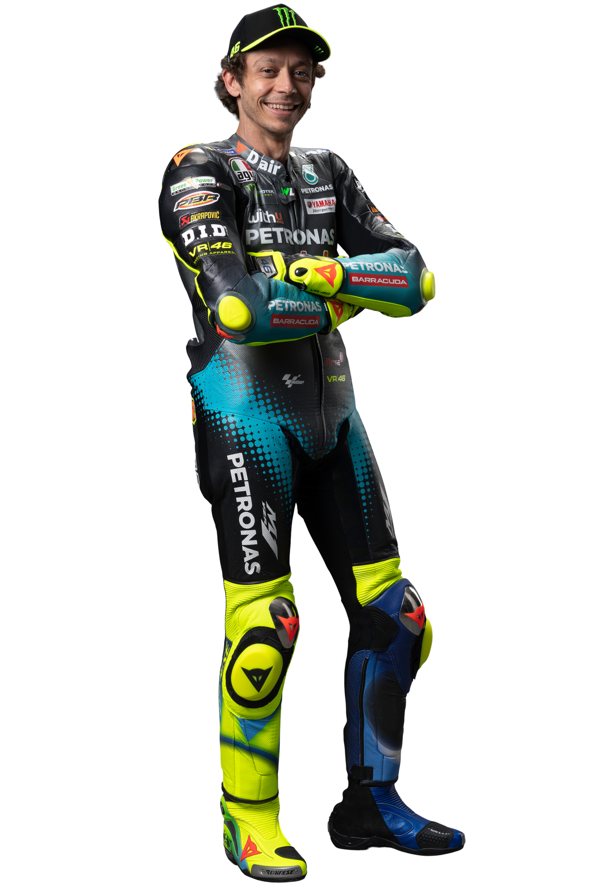

<!DOCTYPE html>
<html lang="en">
<head>
    <meta charset="UTF-8">
    <meta http-equiv="X-UA-Compatible" content="IE=edge">
    <meta name="viewport" content="width=device-width, initial-scale=1.0">
    <link href="https://fonts.googleapis.com/css2?family=Titillium+Web:wght@300&display=swap" rel="stylesheet">
    <link rel="stylesheet" href="./styles/styles.css">
    <script src="https://cdn.jsdelivr.net/npm/@supabase/supabase-js"></script>
    <title>Document</title>
</head>
<body>
    <header>
        <div class="gutter-right logo">
            
        </div>
    </header>
    <main>
        <!-- <section class="detail-section-top">
            <div class="top-left">
                <p class="rider-number">46</p>
                <div class="rider-image">
                    
                </div>
            </div>
            <div class="top-right">
                <div class="name-tag">
                    <div class="flex-row">
                        <p class="racer-name">Valentino Rossi</p>
                        <p class="racer-number">46</p>
                    </div>
                    <p class="sponsored-team">Monster Energy Yamaha MotoGP</p>
                </div>
                <div class="flex-row-space-between">
                    <p class="rank">Rank <span class="pole-position">12</span></p>
                    <p class="points"><span class="pt-count">023</span> pts</p>
                </div>
            </div>
        </section>
        <section class="detail-section-bottom">
            <p class="biography">"The only rider in history to win 125, 250, 500 and MotoGP™ World Championships, Valentino Rossi dominated MotoGP™ with first Honda and then Yamaha, taking the crown five times in a row until Nicky Hayden won the title in 2006. Back on top in 2008 and 2009, the Italian was then beaten to the crown by teammate Jorge Lorenzo in 2010 and left to join the factory Ducati Team. After three podiums over a tough two seasons, the rider from Tavullia was back at Yamaha for 2013 and took his first win in three years in Assen. Runner up in the title in 2014, Rossi then fought for his tenth crown in 2015 but was beaten in the final race by Lorenzo once again. 2016 has seen more pole positions, podiums and race wins and saw the Italian runner up once again; remaining with Movistar Yamaha MotoGP for 2017 with new teammate Maverick Viñales. Another win, at the Dutch GP at the TT Circuit Assen, was the jewel in another successful season – but struggles for the team with low grip and a broken leg sustained in training just before Misano put a damper on the latter half of the year. Rossi impressed to come back from his injury after only three weeks, however, and took another podium before the end of the year, coming second in the awesome showdown at Phillip Island. For 2018, the Italian remained with Yamaha and took another top three overall in the standings, but Rossi didn't stand on the top step in 2018. No win would come Rossi’s way in 2019 either, two podiums in the opening three races would be the only time we saw the number 46 spray the bubbly, while it didn’t get better in 2020, with third in the Andalusian GP his season best result. 2021 sees him make the move to Petronas SRT where he can link up with his academy graduate Franco Morbidelli. Will the change of scenery spark new life into the MotoGP™ veteran?"</p>
        </section> -->
    </main>
    <footer>
        <div class="copy gutter-right">&copy; 2021 Alchemy Code Lab</div>
    </footer>
    <script type="module" src="./script/detail-script.js"></script>
</body>
</html>